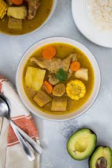

Sancocho
Home

THIS IS SANCOCHOOO
El sancocho es un plato típico dominicano que consiste en un caldo con
varias carnes.
Ingredientes
- Carne de cerdo
- Carne de vaca
- Carne de chivo
- Verduras y vegetales
- Aceite
Pasos
- Sazona las carnes
- Lleve a fuego el aceite hasta calentar.
- Sofría las carnes por 5 minutos, agregando la mitad de la auyama.
- Añada la longaniza y el agua, después agregue los víveres y el resto de la auyama.
- Deje cocinar por 10 minutos más, incorporando las carnes, el ají, el atado de Verduras y todo lo demás.
- Cocinar hasta que se tenga la consistencia deseada y retirar del fuego para servir.